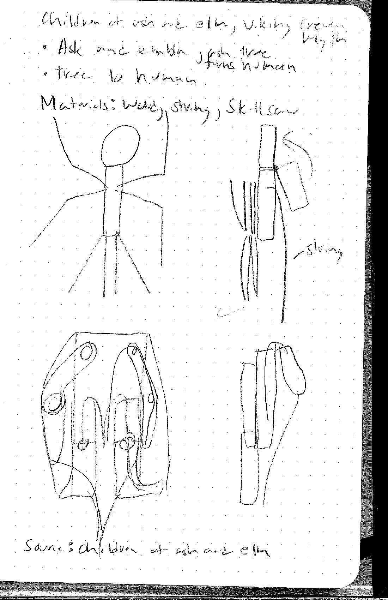
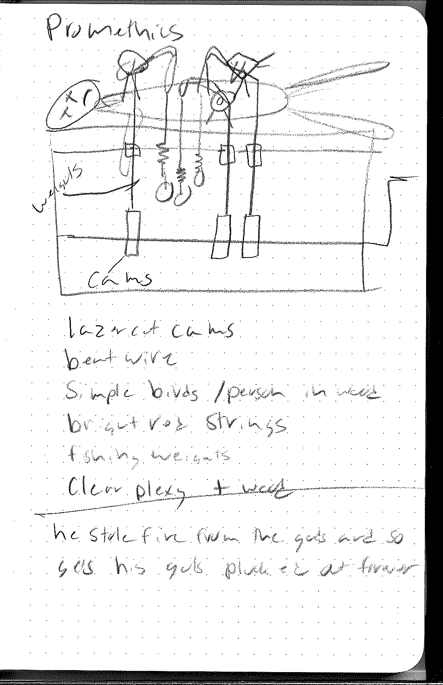
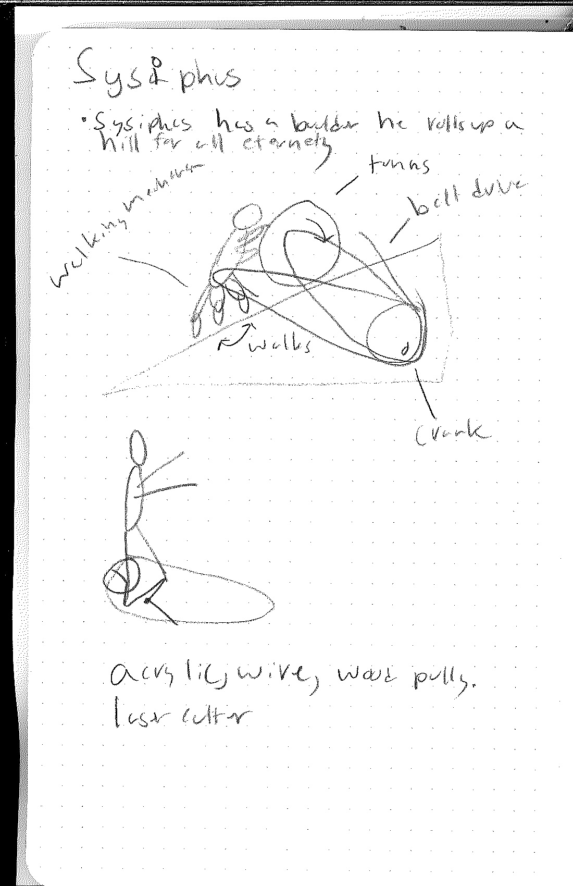

Mythic Automatons: Project Proposals
Children of Ash and Elm, Kinetic Tree / Human Form Puppet Mechanism
This project would involve the fabrication of two puppets, depicting the creation of the first humans from stumps of wood. Their transformation would be activated by a pull string where arms and legs would fold out into human shape and relax back into the shape of a stump. The piece is interactive.
The Punishment of Prometheus
After stealing fire from the gods Prometheus is tortured forevermore by birds which continually pluck and pull at his insides. The sculpture would have birds driven by cams which spring back revealing bright red yarn. This piece is driven by a crank which is great interaction, it can also be driven by a weak motor for more permanent display. The primary lift here is in the cams and in the creation of a human form.
Sisyphus and the Boulder
This myth is great because its so recognizable. Sisyphus pushes the boulder up the hill, again, forevermore. In this piece the viewer takes the place of Sisyphus to turn a crank and power his eternal journey. This piece presents the opportunity to simplify the human form slightly and employ some mechanism to animate the legs. I think its a very inviting piece but perhaps lacking in the fidelity of the animation as the ground would not be moving.
